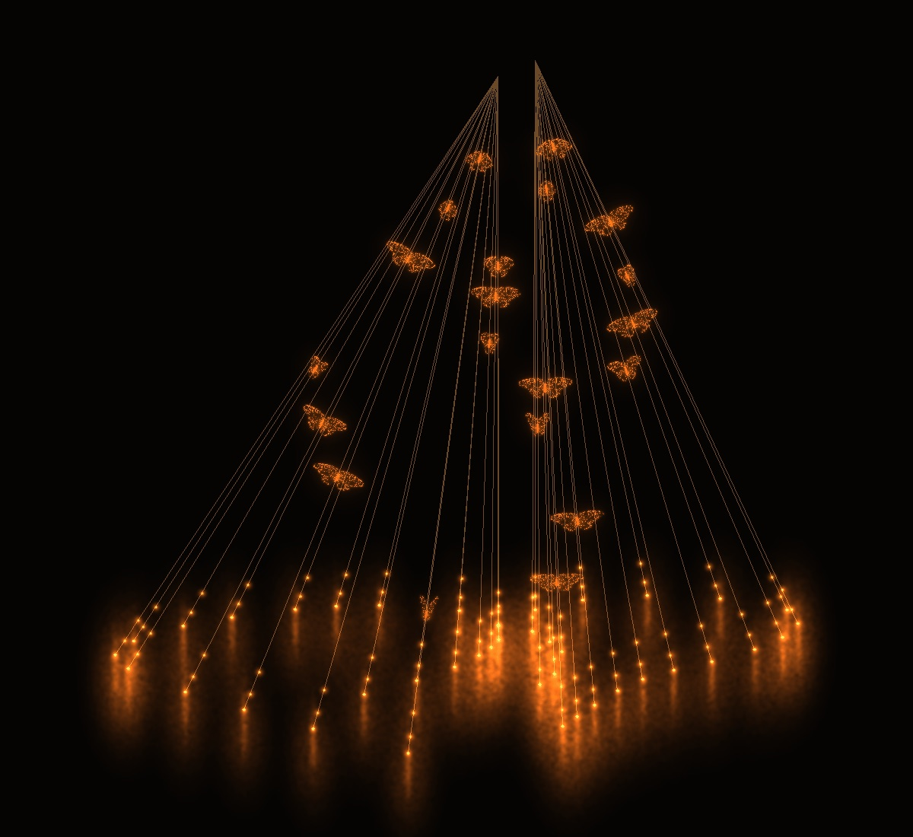
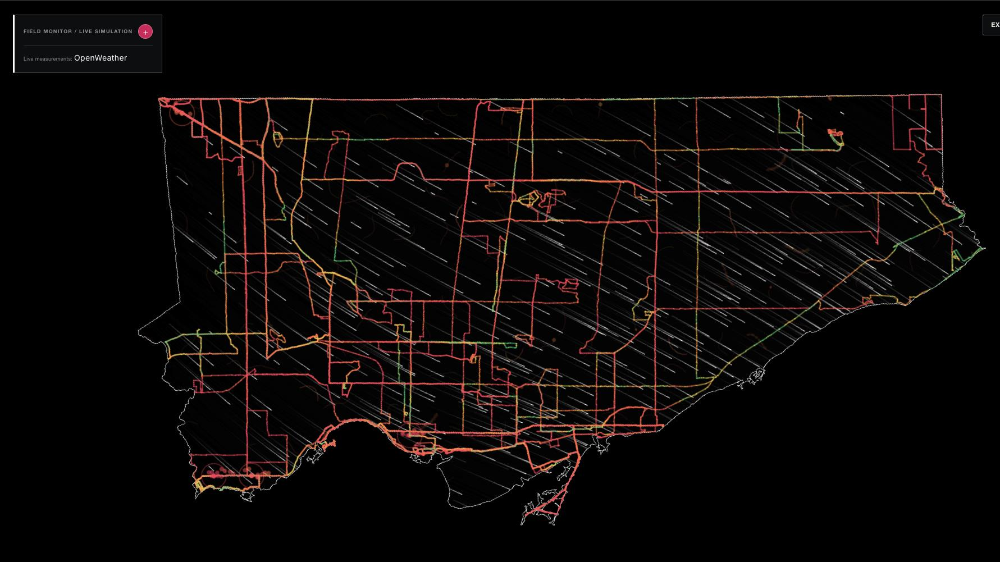
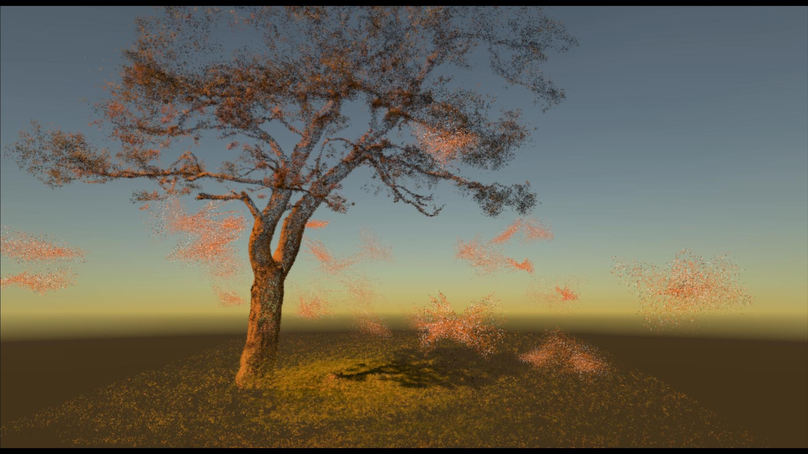
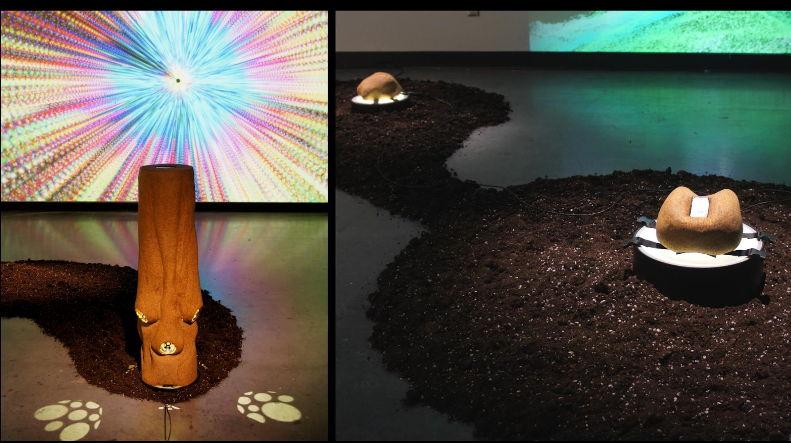
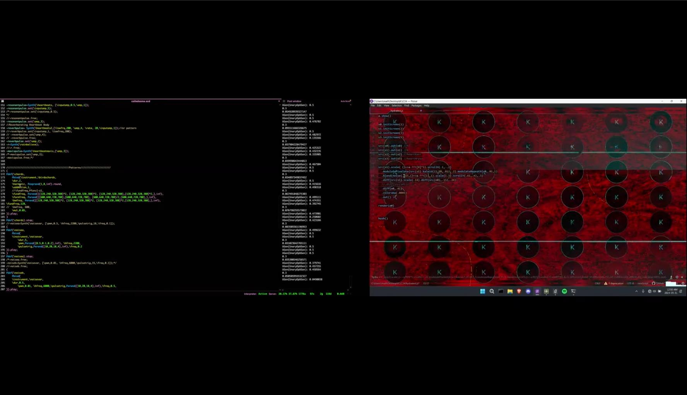
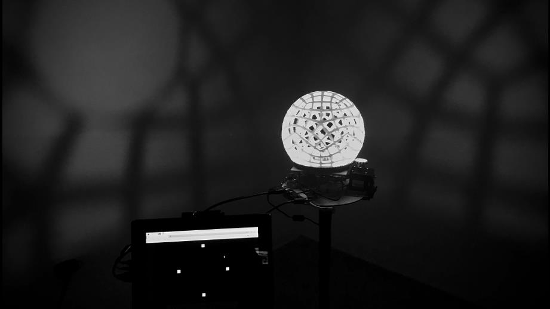
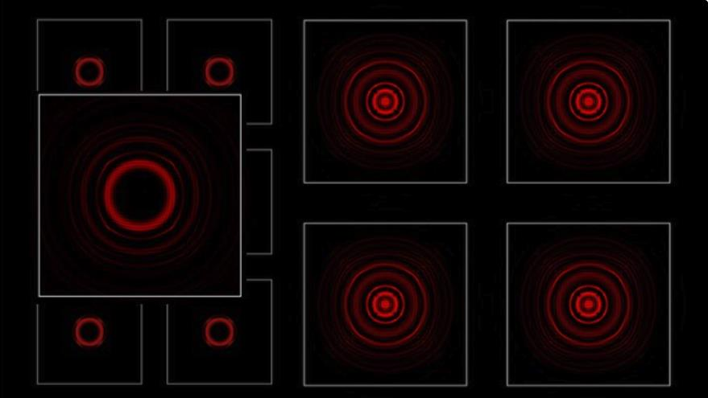

Portfolio · Selected work
Systems for feeling worlds.
Research-creation across environmental sensing, artificial life, biosignals, spatial sound, light, and networked performance.

2026 · Kinetic light + sound
Polytope of Synthetic Emotions
Installation · artificial life · multispecies affect
2026 · Environmental sensing
CALM
Citizen science · hardware · data visualization
2026 · Augmented reality
Corpus Hormē AR
Environmental data · visualization · sonification
2025–2026 · Spatial sound
(ex)tending towards
IoT sensing · quadraphonic composition · sonification
2023–2026 · Live performance
Coiled Soma
Biosensing · live coding · audiovisual performance
2022 · Visual music
Thumos
Synthetic emotion · simulation · kinetic sculpture
2019 · Networked light